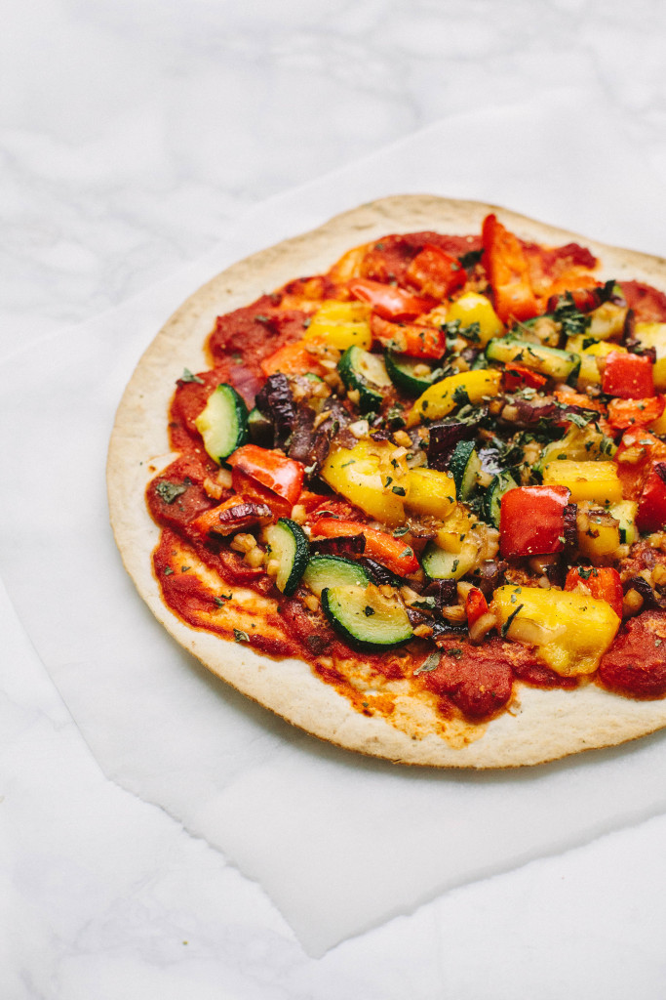

Vegan Vegetable Double-Tortilla Pizza

Description
A baking tray, an oven, tortillas, and vegetables, and you're set to make this crispy, crusted vegan vegetable double-tortilla pizza.
Let's get started on this vegan main dish! Season with salt, pepper, and oregano right as it comes out of the oven.
Ingredients
- 1 tablespoon vegetable oil
- 2 (12-in) flour tortillas
- 1/2 cup tomato sauce, or more to taste
- 5 mushrooms, sliced
- 1/2 green bell pepper, chopped
- 1/2 red onion, chopped
- 1/2 white onion, chopped
- 5 black olives, sliced
- 3 pieces sun-dried tomatoes, chopped
- 1/2 jalapeno pepper, chopped
Steps
- Preheat the oven to 400 degrees F (200 degrees C). Line a baking sheet with parchment paper and brush with olive oil.
- Place a tortilla on the prepared baking sheet; add 1/4 cup of tomato sauce. Top with another tortilla and spread another 1/4 cup tomato sauce over the tortilla. Decorate the pizza with mushrooms, green bell pepper, red onion, white onion, black olives, sun-dried tomatoes, and jalapeno pepper.
- Bake in the preheated oven until toppings are softened, about 20 minutes.